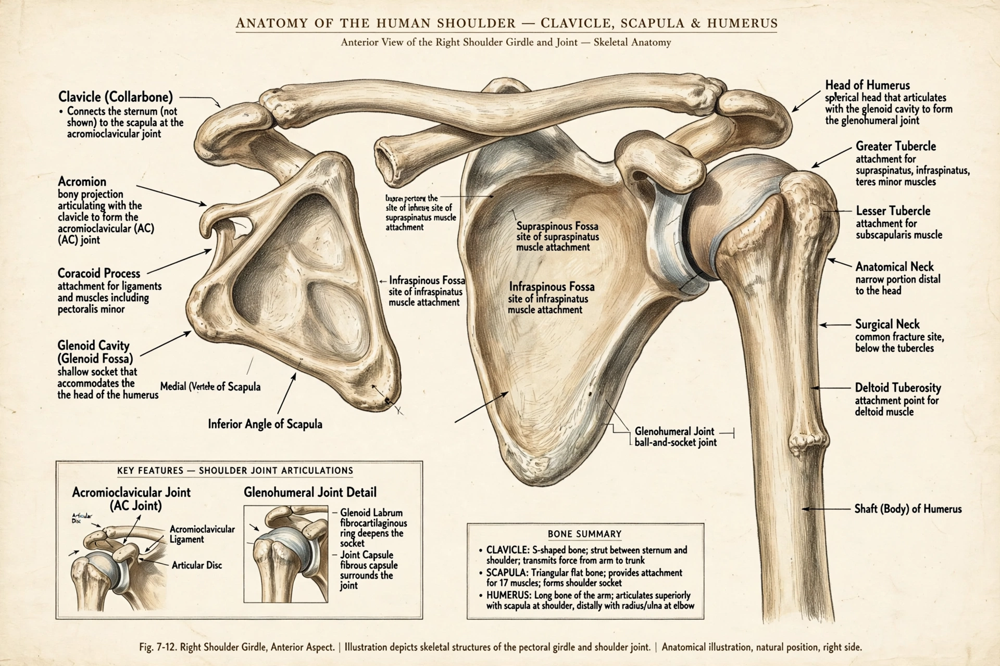

| Shoulder | |
|---|---|
 | |
| System | Musculoskeletal |
| Joints | Glenohumeral, acromioclavicular, sternoclavicular |
| Bones | Humerus, scapula, clavicle |
The human shoulder is the region where the arm joins the trunk. It comprises the glenohumeral joint — a ball-and-socket synovial joint between the head of the humerus and the shallow glenoid cavity of the scapula — together with the acromioclavicular and sternoclavicular joints and surrounding muscles.
The shoulder is the most mobile joint in the body, trading stability for range: flexion, extension, abduction, adduction, rotation, and circumduction. Stability comes mainly from the rotator cuff muscles (supraspinatus, infraspinatus, teres minor, subscapularis), the glenoid labrum, and the loose joint capsule.
Common problems include dislocation (most often anterior), rotator cuff tears, impingement, adhesive capsulitis (frozen shoulder), and osteoarthritis. Shoulder pain is among the most frequent musculoskeletal complaints.